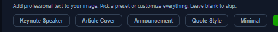

Revenue Systems Operator
Tony Beal

RevOps • Business Development • Pipeline Leadership
I help B2B teams create predictable pipeline with strategic account targeting, CRM execution, and modern outbound systems.
0Years in B2B Sales
0Accounts Developed
0Customers Acquired
0Pipeline Built
What I Build
- Revenue Operations Strategy
- Business Development Systems
- Pipeline Development Engines
- Strategic Account Targeting
- CRM Workflow Optimization
- AI-Assisted Prospecting Motion
Target Roles
- Director of Business Development
- Revenue Operations Manager/Director
- Sales Operations Manager
- Strategic / Enterprise Account Executive
- GTM Systems & Enablement Leadership
Experience Snapshot
Natoli Engineering — Revenue Operations & Commercial Development
Drove commercial growth through account targeting, CRM visibility, and structured outreach execution in pharma and industrial markets.
ProForm Manufacturing — Director of Business Development
Owned pipeline growth, market expansion, and strategic account development in precision manufacturing.
BioGaia USA — Regional Sales Leadership
Built territory systems and developed 3,750+ accounts while leading retention and growth initiatives.
Contact
Email: tonybeal40@gmail.com
LinkedIn: linkedin.com/in/tony-beal40
Location: Greater St. Louis Area • Open to Remote/Hybrid US roles
Typical response: within 24 hours.